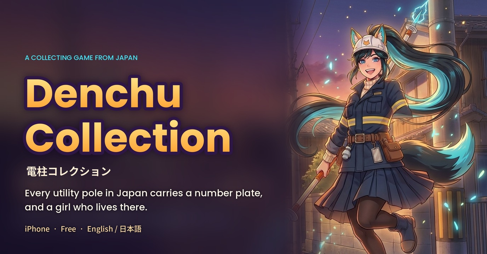
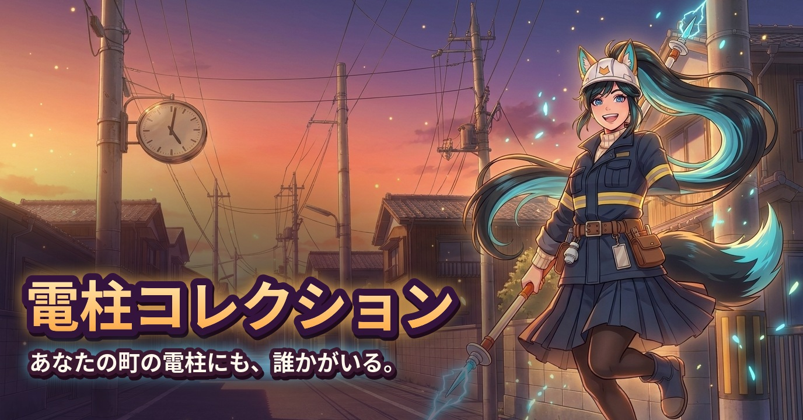
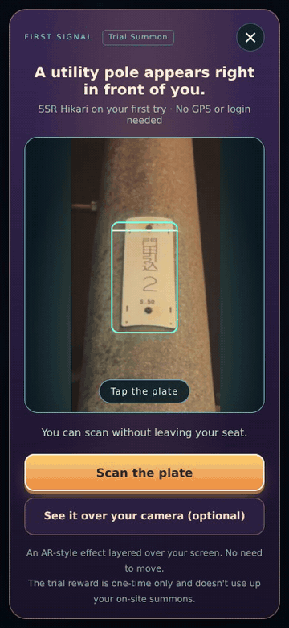
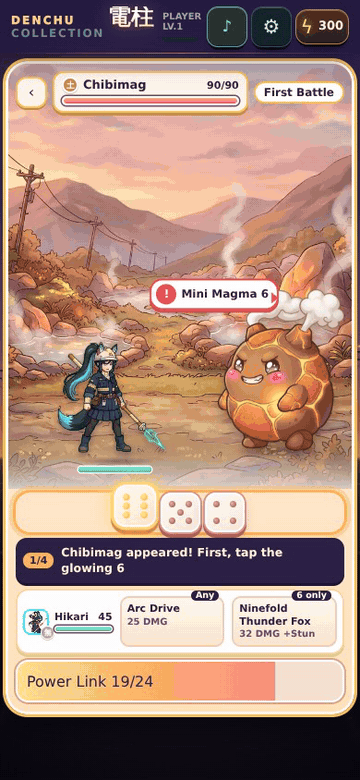

Denchu Collection
Press kit
Feel free to use the images and GIFs here in articles, videos and streams about the game (cropping and resizing are fine). A short note when you cover it would be much appreciated.
Description
Scan the number plate on a Japanese utility pole and the girl who lives there appears; the same pole always brings the same girl. Denchu Collection, a collecting game with dice battles for iPhone.
Almost every utility pole in Japan carries a small number plate. In Denchu Collection, photographing one makes the pole's resident appear: a Denki, one of 47 girls, one for each prefecture. The same plate always calls the same Denki, so friends who scan the same pole meet the same girl, and the poles you pass on a trip may hide girls you have never met.
The first summon happens indoors, with no camera or GPS. Talk with the girls you meet and come back to their poles to grow closer, then take a team of up to three into dice battles against the Big Four, who rule geothermal, thermal, hydro and wind power. The English version is made for visitors to Japan: on-site summons work at real poles in Japan, and the trial summon, battles, Denki Index and chats work anywhere.
Features
- Summon with a number plateJust photograph the plate. The prefecture and the number decide who lives there; friends who scan the same pole meet the same girl. Come back for a reunion.
- Start sitting downThe indoor Trial Summon needs no camera or GPS and brings your first partner, Thunder Fox Hikari (SSR). No account or login.
- 47 prefectures, 47 DenkiCollected in the Denki Index and the Regional Album. Every Denki has her own voice (in Japanese); her lines and strength change as you grow closer.
- Dice battles for threePick skills that match the dice; some ultimates fire only on a certain number. The Big Four of geothermal, thermal, hydro and wind power await.
- Share your encountersTurn the card of a girl you summoned into an image to save or share.
Fact sheet
| Title | Denchu Collection (電柱コレクション) |
|---|---|
| Genre | Collecting game with dice battles; summon with a utility pole's number plate |
| Platform | iPhone (iOS 15.0 or later) |
| Price | Free |
| Release | October 23, 2026 |
| Regions | Japan, United States, Canada, United Kingdom, Australia, New Zealand, Singapore, Hong Kong, Taiwan, Thailand, Philippines, Malaysia, India |
| Languages | English, Japanese |
| Developer | Sanraku (solo developer, Japan) |
| App Store | https://apps.apple.com/app/id6817256008 |
| X | https://x.com/denchu_collect |
| Website (Japanese) | https://denchu-collection.com/ |
Key art




Icon

GIFs
Captured from the game itself (the version on the App Store). MP4s (390 × 844, 30 fps) are linked under each GIF.

GIF 1.7 MBMP4 0.4 MB


GIF 3.0 MBMP4 0.9 MB

Screenshots
1320 × 2868 JPGs. Tap for full size.
English


Japanese


Streaming and video guidelines (let's plays and monetization welcome, no need to ask)
Contact
Sanraku — wakahisamk@gmail.com